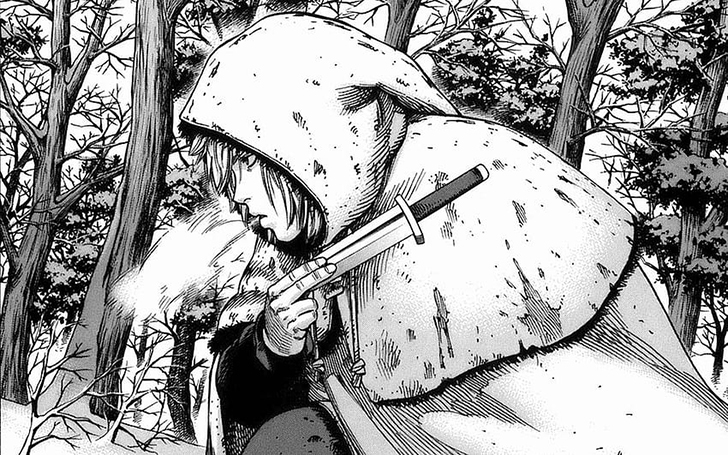

Vinland Saga
Resumo
Thorfinn é filho de Thors, um lendário guerreiro viking, mas que após anos no campo de batalha, descobre uma coisa mais maravilhosa que matar seus iguais. Viver sua própria vida, em paz. Mas os ventos lhe trazem uma notícia que atrapalhará seus dias de paz, e Thorfinn, seu filho, pouco sabe desta vida passada de guerra de seu pai. Após descobrir o passado de seu pai, Thorfinn se revolta contra ele, e sai para a guerra junto de seu pai, mas quando reconhece o verdadeiro valor dele, já é tarde demais. Agora Thorfinn deverá seguir sua própria vida, seguindo valores que seu pai lhe ensinou, mas sem perder sua coragem. Este é só o começo desta grande saga de Thorfinn que acompanha os Vikings no século XI!!!